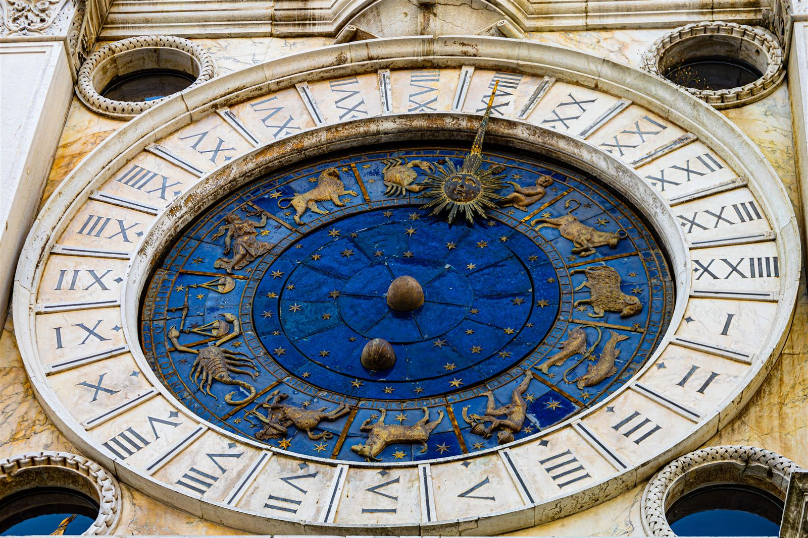
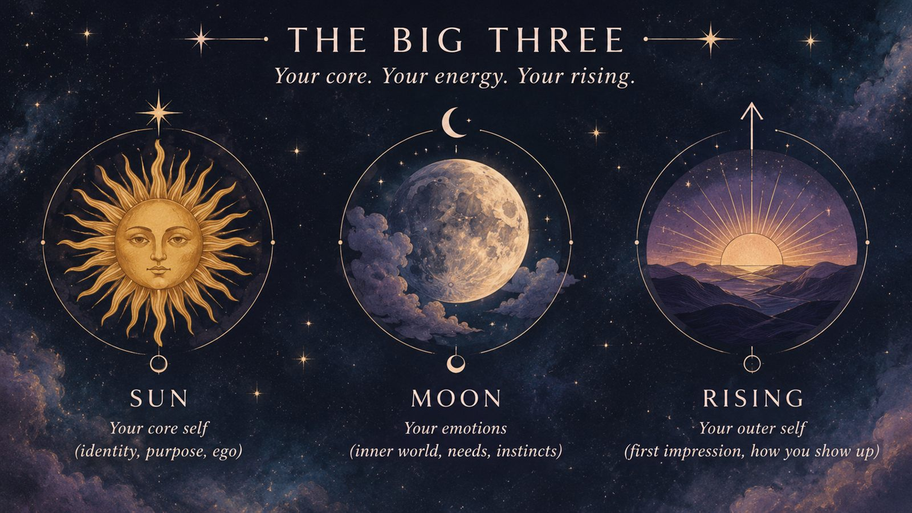

What is astrology?
Astrology is a set of divinatory and symbolic practices that looks for meaning, guidance, and patterns in the sky by observing and interpreting the positions and movements of celestial bodies like the Sun, Moon, planets, and stars.
Modern science classifies astrology as pseudoscience. It relies on symbolic correspondence rather than observational evidence or physical mechanisms like gravity to affect human behavior. Despite this, it remains popular worldwide as a tool for personal reflection, entertainment, and cultural tradition.
History
The history of astrology is a story of deep human connection to the cosmos, beginning long before it was a daily horoscope app or a tool for personal identity. Early humans noticed that the changing night sky corresponded with earthly seasons, marking bones and cave walls to track lunar cycles as far back as 25,000 years ago. However, the first truly organized system of astrology emerged in ancient Mesopotamia, specifically Babylonia, during the 2nd millennium BC. This early practice, known as mundane astrology, was strictly concerned with the state, predicting weather, agricultural shifts, and political outcomes for the king based on celestial omens, which they believed were direct communications from the gods.
The astrology we recognize today, centered around individual birth charts, began to take shape during the Hellenistic period in Egypt (around 3rd and 2nd centuries BC). Following the conquests of Alexander the Great, Egyptian traditions of measuring time using decans (specific star groupings) merged with the Babylonian zodiac and Greek philosophies of elements and planetary gods. This synthesis created “horoscopic astrology”. In the Roman era, the influential scholar Ptolemy wrote the “Tetrabiblos” in Alexandria, standardizing these astrological principles into a foundational text that would guide Western astrological tradition for over a thousand years.
Rather than developing in isolation, astrological knowledge was a vast, cross-cultural exchange. After the fall of the Roman Empire, these traditions were preserved, expanded, and mathematically refined in the Islamic world and Sasanian Iran. Scholars translated Greek, Persian, and Indian texts into Arabic, turning astrology into a highly respected academic and scientific pursuit. By the 12th century, these Arabic texts were translated into Latin, reintroducing a highly sophisticated astrological system to medieval Western Europe, where it deeply influenced medicine, astronomy, and culture until the Scientific Revolution.
The Big Three
In astrology, the “Big Three” refers to your Sun sign, Moon sign, and Rising sign (Ascendant). Together, they form the core foundation of your natal birth chart and describe your personality.

The Sun Sign (Core Identity)
- What it represents: Your ego, core identity, life purpose, and conscious self.
- How it is calculated: Based on your date of birth (month and day).
- The vibe: It answers the question “Who are you at your core?” and drives your long-term ambitions and vital energy.
The Moon Sign (Emotional World)
- What it represents: Your inner emotional world, instincts, subconscious, and private self.
- How it is calculated: Based on your birth date and the exact or approximate time of birth (the Moon moves fast, changing signs about every 2.5 days).
- The vibe: It answers the question “How do you process feelings and find safety?” It governs your hidden vulnerabilities and comfort zones.
The Rising Sign / Ascendant (Outward Persona)
- What it represents: Your outward personality, first impressions, social mask, and how others perceive you.
- How it is calculated: Based on the exact time and geographical location of your birth (changing roughly every two hours as the zodiac rotates on the eastern horizon).
- The vibe: It answers the question “How do you come across when people first meet you?” or “What outfit does your personality wear?”
You can find your big three here.